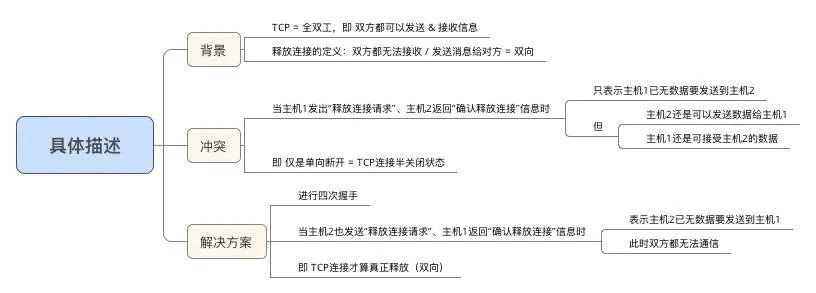

TCP协议详解
参考地址：https://www.jianshu.com/p/65605622234b
1.定义
Transmission Control Protocol，即 传输控制协议
- 属于 传输层通信协议
- 基于TCP的应用层协议有HTTP、SMTP、FTP、Telnet 和 POP3
位于TCP/IP协议体系结构中的第三层 传输层
2.特点
- 面向连接
- 使用TCP协议传输数据前，必须先建立TCP连接
- 全双工通信
- 通信双方都可以发送数据
- 可靠
- 不丢失、无差错、不重复、按序到达
- 面向字节流
- 一次传输的报文段有长度限制，可分块、分次传输
3.优缺点
- 优点： 可靠，不丢失
- 缺点： 效率低，因为每次使用都要建立连接
4.报文段格式
- TCP虽面向字节流，但传送的数据单元 = 报文段
- 报文段 = 首部 + 数据 2部分
- TCP的全部功能体现在它首部中各字段的作用，故下面主要讲解TCP报文段的首部
首部前20个字符固定、后面有4n个字节是根据需而增加的选项
故 TCP首部最小长度 = 20字节
5.TCP连接建立过程
- TCP协议建立需要经过 三次握手
- 第一次握手：客户端发送一个 连接请求 报文段到服务端，报文段中首部信息：SYN = 1， 并随机一个起始序号 x， seq = x；不携带数据， 客户端进入 SYN_SENT 状态
- 第二次握手：服务端接收到连接请求报文段，，也向客户端发送一个 连接确认 的报文段，报文段中首部信息：SYN = 1，ACK = 1，并随机一个起始序号 y， seq = y，确认号字段，ack = x + 1；不携带数据，服务端进入 SYN_RCVD 状态
- 第三次握手：客户端收到服务端发送的连接确认报文段，再向服务端发送一个 连接确认 的报文段，报文段首部信息：ACK = 1，seq = x + 1， ack = y + 1，因无SYN = 1，此报文段可携带数据.此时，客户端与服务端都进入ESTABLISHED状态


- 成功进行TCP的三次握手后，就建立起一条TCP连接，即可传送应用层数据 *
- 因 TCP提供的是全双工通信，故通信双方的应用进程在任何时候都能发送数据
- 三次握手期间，任何1次未收到对面的回复，则都会重发
特别说明：为什么TCP建立连接需三次握手？
answer:
- 防止服务器端因接收了早已失效的连接请求报文，从而一直等待客户端请求，最终导致形成死锁、浪费资源
具体描述
SYN洪泛攻击：
从上可看出：服务端的TCP资源分配时刻 = 完成第二次握手时；而客户端的TCP资源分配时刻 = 完成第三次握手时
这就使得服务器易于受到SYN洪泛攻击，即同时多个客户端发起连接请求，从而需进行多个请求的TCP连接资源分配
6.释放连接过程
在通信结束后，需要释放TCP连接，需经历四次挥手过程，才能断开连接
四次挥手
- 第一次挥手，客户端向服务端发送一个 释放连接 的报文段，报文段信息：FIN = 1，seq = u，客户端进入 FIN_WAIT_1 状态
- 第二次挥手，服务端收到客户端发送的释放连接的请求报文，想客户端发送一个 连接释放确认 报文段，报文段信息： ACK = 1，seq = v，ack = u + 1， 服务端进入 CLOSE_WAIT 状态。
此时，客户端 -> 服务端的连接已断开，TCP连接处于半关闭状态 - 第三次挥手，服务端向客户端再发送一个 释放连接 的报文段，报文段信息：FIN= 1， ACK = 1，seq = w，ack = u + 1；服务端进入 LAST_ACK 状态
- 第四次挥手，客户端接收到服务端发送的释放连接报文，再向服务端发送一个 连接释放确认 报文段，报文段信息： ACK = 1，seq = u + 1，ack = w + 1。
此时客户端进入 TIME_WAIT 状态，服务端进入 CLOSED 状态，此时TCP还未断开，需经过时间等待计时器设置的时间2MSL后，客户端才进入 CLOSED 状态，即服务端比客户端先关闭
特别说明：为什么TCP释放连接需四次挥手？
结论
- 为了保证通信双方都能通知对方 需释放 & 断开连接
即释放连接后，都无法接收 / 发送消息给对方
- 为了保证通信双方都能通知对方 需释放 & 断开连接
具体描述

延伸疑问：为什么客户端关闭连接前要等待2MSL时间？
即 TIME - WAIT 状态的作用是什么；
MSL = 最长报文段寿命（Maximum Segment Lifetime）
原因1：为了保证客户端发送的最后1个连接释放确认报文 能到达服务器，从而使得服务器能正常释放连接
原因2：防止 上文提到的早已失效的连接请求报文 出现在本连接中客户端发送了最后1个连接释放请求确认报文后，再经过2MSL时间，则可使本连接持续时间内所产生的所有报文段都从网络中消失
即 在下1个新的连接中就不会出现早已失效的连接请求报文
7.无差错传输
- 对比于UDP，TCP的传输是可靠的、无差错的
- 那么，为什么TCP的传输为什么是可靠的、无差错的呢？
- 下面，我将详细讲解TCP协议的无差错传输
含义
- 无差错：即 传输信道不出差错
- 发送 & 接收效率匹配：即 无论发送方以多快的速度发送数据，接收方总来得及处理收到的数据
基础：滑动窗口 协议
- 先理解2个基础概念：发送窗口、接收窗口
- 工作原理
- 对于发送端：
- 1、每收到一个确认帧，发送窗口就向前滑动一个帧的距离
- 2、当发送窗口内无可发送的帧时（即窗口内的帧全部是已发送但未收到确认的帧），发送方就会停止发送，直到收到接收方发送的确认帧使窗口移动，窗口内有可以发送的帧，之后才开始继续发送
- 对于发送端：
具体如下图：
只有收到服务端发送的确认帧，才会继续发送数据帧，否则停止发送
- 对于接收端：当收到数据帧后，将窗口向前移动一个位置，并发回确认帧，若收到的数据帧落在接收窗口之外，则一律丢弃。

也就是说，只有确保当前的数据帧是准确位置窗口的，否则丢弃
- 总的流程：
- 1、客户端向服务端发送数据帧
- 2、服务端接收数据帧，并判断该数据帧是否属于当前接收窗口，如果不是，则丢弃该数据帧。如果是，则放入该接收窗口，并右移，然后向客户端发送确认帧
- 3、客户端接收到确认帧，并检查发出的数据帧是否都收到确认帧，如果没有，则等待接收确认帧。如果都收到确认帧，则又从第1步开始。
滑动窗口 协议的重要特性
- 只有接收窗口向前滑动、接收方发送了确认帧时，发送窗口才有可能（只有发送方收到确认帧才是一定）向前滑动
- 停止-等待协议、后退N帧协议 & 选择重传协议只是在发送窗口大小和接收窗口大小上有所差别：
停止等待协议：发送窗口大小=1，接收窗口大小=1；即 单帧滑动窗口 等于 停止-等待协议
后退N帧协议：发送窗口大小>1，接收窗口大小=1。
选择重传协议：发送窗口大小>1，接收窗口大小>1。
- 当接收窗口的大小为1时，可保证帧有序接收。
- 数据链路层的滑动窗口协议中，窗口的大小在传输过程中是固定的（注意要与TCP的滑动窗口协议区别）
实现无差错传输的解决方案
核心思想：采用一些可靠传输协议，使得
- 出现差错时，让发送方重传差错数据：即 出错重传
- 当接收方来不及接收收到的数据时，可通知发送方降低发送数据的效率：即 速度匹配
针对上述2个问题，分别采用的解决方案是：自动重传协议 和 流量控制 & 拥塞控制协议
解决方案1：自动重传请求协议ARQ（针对 出错重传）
定义
- 即 Auto Repeat reQuest，具体介绍如下：
- 即 Auto Repeat reQuest，具体介绍如下：
类型
下面，将主要讲解 上述3类协议
- 类型1：停等式ARQ（Stop-and-Wait） *
- 原理：（单帧滑动窗口）停止 - 等待协议 + 超时重传
即 ：发送窗口大小=1、接收窗口大小=1
- 停止 - 等待协议的协议原理如下：
发送方每发送一帧，要等到接收方的应答信号后才能发送下一帧
接收方每接收一帧，都要反馈一个应答信号，表示可接下一帧
若接收方不反馈应答信号，则发送方必须一直等待
类型2：后退N帧协议 *
也称：连续ARQ协议原理
- 多帧滑动窗口 + 累计确认 + 后退N帧 + 超时重传
即 ：发送窗口大小>1、接收窗口大小=1
- 具体描述
a. 发送方：采用多帧滑动窗口的原理，可连续发送多个数据帧 而不需等待对方确认
b. 接收方：采用 累计确认 & 后退N帧的原理，只允许按顺序接收帧。具体原理如下：
- 示例讲解 *
本示例 = 源站 向 目的站 发送数据帧。具体示例如下：
类型3：选择重传ARQ（Selective Repeat） *
原理
- 多帧滑动窗口 + 累计确认 + 后退N帧 + 超时重传
即 ：发送窗口大小>1、接收窗口大小>1
- 多帧滑动窗口 + 累计确认 + 后退N帧 + 超时重传
类似于类型2（后退N帧协议），此处仅仅是接收窗口大小的区别，故此处不作过多描述
- 特点
- a. 优：因连续发送数据帧而提高了信道的利用率
- b. 缺：重传时又必须把原来已经传送正确的数据帧进行重传（仅因为这些数据帧前面有一个数据帧出了错），将导致传送效率降低
由此可见，若信道传输质量很差，导致误码率较大时，后退N帧协议不一定优于停止-等待协议
解决方案2：流量控制 & 拥塞控制（针对 速度匹配）
措施1：流量控制 *
简介
示例
特别注意：死锁问题
措施2：拥塞控制 *
定义
- 防止过多的数据注入到网络中，使得网络中的路由器 & 链路不致于过载
拥塞：对网络中的资源需求 > 该资源所能提供的部分
- 防止过多的数据注入到网络中，使得网络中的路由器 & 链路不致于过载
与 “流量控制”的区别
- 具体解决方案
- 共分为2个解决方案：慢开始 & 拥塞避免、快重传 & 快恢复
其中，涉及4种算法，即 慢开始 & 拥塞避免、快重传 & 快恢复
- 共分为2个解决方案：慢开始 & 拥塞避免、快重传 & 快恢复
解决方案1：慢开始 & 拥塞避免
储备知识：拥塞窗口、慢开始算法、拥塞避免算法
a. 拥塞窗口
- 发送方维持一个状态变量：拥塞窗口（cwnd， congestion window ），具体介绍如下
b. 慢开始算法
原理
- 当主机开始发送数据时，由小到大逐渐增大 拥塞窗口数值（即 发送窗口数值），从而 由小到大 逐渐增大发送报文段
目的
- 开始传输时，试探网络的拥塞情况
具体措施
- 示意图
- 特别注意
- 慢开始的“慢”指：一开始发送报文段时拥塞窗口（cwnd）设置得较小（为1），使得发送方在开始时只发送一个报文段（目的是试探一下网络的拥塞情况）
并不是指拥塞窗口（cwnd）的增长速率慢
c. 拥塞避免 算法
- 原理
- 使得拥塞窗口（cwnd）按线性规律 缓慢增长：每经过一个往返时间RTT，发送方的拥塞窗口（cwnd）加1
拥塞避免 并不可避免拥塞，只是将拥塞窗口按现行规律缓慢增长，使得网络比较不容易出现拥塞
相比慢开始算法的加倍，拥塞窗口增长速率缓慢得多
- 示意图
解决方案1描述（慢开始 & 拥塞避免）
- 为了防止拥塞窗口（cwnd）增长过大而引起网络拥塞，采用慢开始 & 拥塞避免 2种算法，具体规则如下
- 实例说明
解决方案2：快重传 & 快恢复
快重传 & 快恢复的解决方案 是对慢开始 & 拥塞避免算法的改进
- 2.1 储备知识：快重传算法、快恢复算法 *
a. 快重传算法
原理
- 接收方 每收到一个失序的报文段后 就立即发出重复确认（为的是使发送方及早知道有报文段没有到达对方），而不要等到自己发送数据时才进行捎带确认
- 发送方只要一连收到3个重复确认就立即重传对方尚未收到的报文段，而不必 继续等待设置的重传计时器到期
作用
- 由于发送方尽早重传未被确认的报文段，因此采用快重传后可以使整个网络吞吐量提高约20%
示意图
b. 快恢复
当发送方连续收到3个重复确认后，就：
- 执行 乘法减小 算法：把 慢开始门限（ssthresh）设置为 出现拥塞时发送方窗口值的一半 = 拥塞窗口的1半
- 将拥塞窗口（cwnd）值设置为 慢开始门限ssthresh减半后的数值 = 拥塞窗口的1半
- 执行 加法增大 算法：执行拥塞避免算法，使拥塞窗口缓慢地线性增大。
注：
- 由于跳过了拥塞窗口（cwnd）从1起始的慢开始过程，所以称为：快恢复
- 此处网络不会发生网络拥塞，因若拥塞，则不会收到多个重复确认报文
解决方案描述（快重传 & 快恢复）
- 原理
- 为了优化慢开始 & 拥塞避免的解决方案，在上述方案中加入快重传 & 快恢复 2种算法，具体规则如下
- 示意图
至此，关于TCP无差错传输的知识讲解完毕。